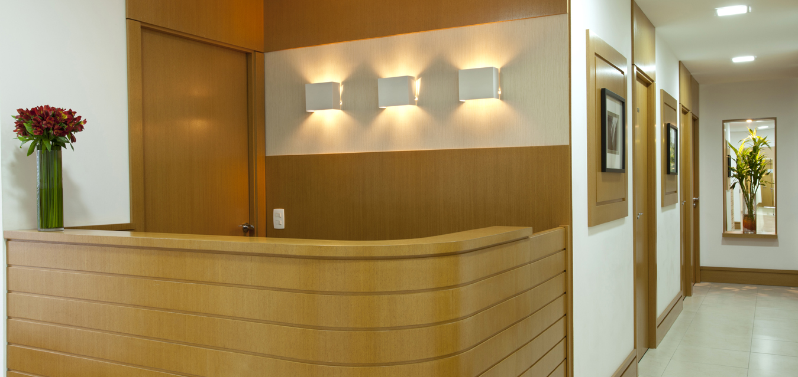

Nosso escritório
Para maior comodidade e excelência no atendimento, estamos localizados na Avenida Paulista, o maior polo financeiro da América Latina. Privilegiado pelo rápido acesso de qualquer região de São Paulo, a apenas 450 metros da estação Trianon – Masp do metrô.
